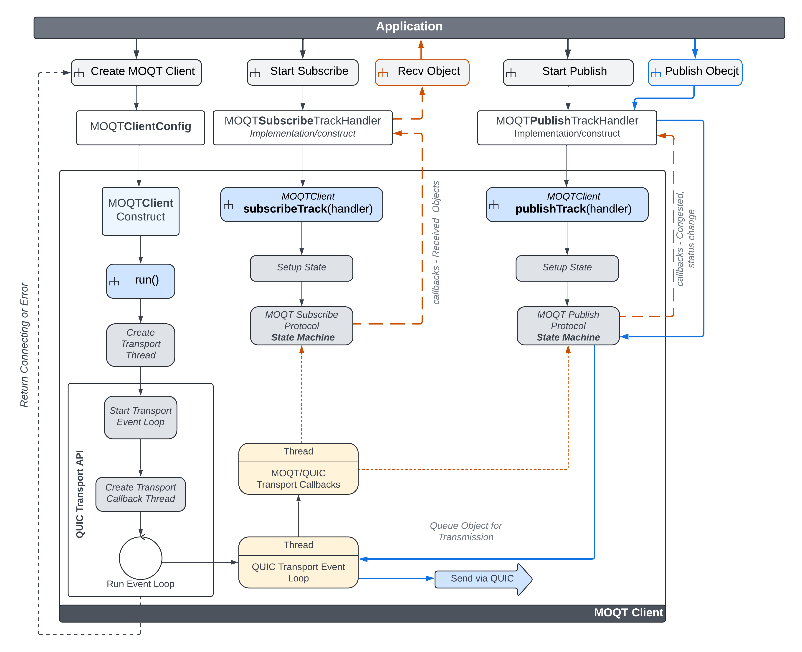

- Generated by
 1.11.0
1.11.0
|
LibQuicR
|
This library provides a publisher and subscriber API using MoQT. It provides a class for Client and Server that will handle all MoQT protocol state machine functions. Both classes contain pure virtual methods (e.g., callbacks) that MUST be implemented.
Subscriptions and publications are handled via Subscribe Track Handler and Publish Track Handler. Both classes contain pure virtual methods (e.g., callbacks) that MUST be implemented.
| Class | Description |
|---|---|
| moq::transport::Client | Client handler, which is specific to a QUIC IP connection |
| moq::transport::ClientConfig | Client configuration |
| Class | Description |
|---|---|
| moq::transport::Server | Server handler, which is specific to the QUIC IP listening IP and port |
| moq::transport::ServerConfig | Server configuration |
Both client and server implement publishTrack() and subscribeTrack() methods to start a new subscription and/or publication. Use the below handler classes when calling the methods. Each track handler is constructed for a single full track name (e.g., namespace and name).
| Class | Description |
|---|---|
| moq::transport::SubscribeTrackHandler | Subscribe track handler for subscribe related operations and callbacks |
| moq::transport::PublishTrackHandler | Publish track handler for publish related operations and callbacks |
